La Florida
Checklist para turno
Pendientes que dejas al próximo turno (ej. recibir pedido, hablar con proveedor, comprar producto). Cualquiera puede agregar, marcar o borrar.
0 de 0
📸 Traspaso verificado
Foto tomada en vivo (no se puede elegir de la galería) + ubicación + hora puesta por el servidor.
Guía diaria
0 de 0
Semanal
Rutina del local · se edita en modo 🔑 supervisor